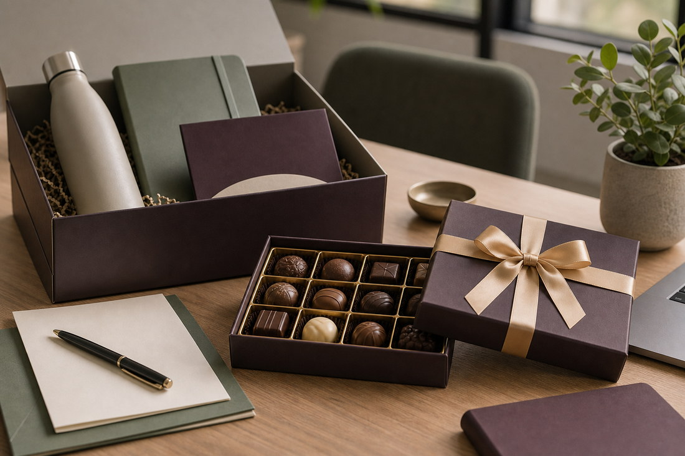

Noire Signature Bars
Elegante premium chocoladerepen voor luxe retail, delicatessenwinkels en verfijnde cadeauverkoop.
Noire — van DutchDelight Chocolates
Verfijnde chocolade voor momenten met uitstraling.
Noire is het luxemerk van DutchDelight Chocolates, ontwikkeld voor premium retail, stijlvolle geschenken en verfijnde hospitalitymomenten.

Productlijnen
Elegante premium chocoladerepen voor luxe retail, delicatessenwinkels en verfijnde cadeauverkoop.

Luxe chocoladecollecties voor relatiegeschenken, seizoensmomenten en premium retailpresentaties.

Premium chocolademomenten voor hotels, restaurants, koffieservice en high-end hospitality.
Noire Velvet Orange combineert rijke pure chocolade met de warme elegantie van sinaasappel. De smaak is vol en verfijnd, met een subtiele citrusnoot die de donkere cacao aanvult zonder te overheersen.
Smaakprofiel: pure chocolade, warme sinaasappel, lichte bitterheid en een zachte afdronk.

Noire Caramel Sea Salt is een toegankelijke premium reep met een rijke combinatie van romige karamel en een vleug zeezout. De balans tussen zoet en zout maakt deze smaak breed inzetbaar binnen luxe retail en cadeauverkoop.
Smaakprofiel: romige chocolade, karamel, zeezout, vol en licht hartig.

Noire Dark Almond Selection is een volwassen chocoladereep met intense pure chocolade en geroosterde amandelen. Door de combinatie van donkere cacao en notige tonen past deze smaak goed bij delicatessenwinkels en zakelijke geschenken.
Smaakprofiel: pure chocolade, geroosterde amandel, notige diepte en een verfijnde crunch.
Een luxe proefdoos waarmee klanten meerdere smaken van Noire kunnen ontdekken. Geschikt voor consumenten die kennis willen maken met het merk en voor winkels of distributeurs die Noire willen presenteren tijdens proeverijen.
Momenten: introductie, tasting, cadeau en premium retailpresentatie.

Een hoogwaardige geschenkdoos voor zakelijke en particuliere cadeaumomenten. De box combineert verschillende Noire-producten in een luxe verpakking voor relatiegeschenken, kerstpakketten en bedankmomenten.
Mogelijke inhoud: Signature Bars, gevulde chocolades, miniaturen en een proefkaart met smaakinformatie.
Tijdelijke collecties rond specifieke seizoenen en feestdagen. Deze lijn geeft retailers en zakelijke klanten de mogelijkheid om met Noire in te spelen op cadeauverkoop rond kerst, Pasen, Valentijn of het eindejaar.
Accenten: bordeaux, champagnegoud, crème, zachtroze of warm koper.
Kleine, individueel verpakte premium chocolaatjes voor professionele omgevingen waar presentatie, hygiëne en gemak belangrijk zijn.
Momenten: koffieservice, hotelkamer, vergaderruimte, bij de rekening of als kleine gastattentie.

Intense, compacte chocolades die zorgvuldig zijn gekozen als begeleider bij koffie en espresso. Een eenvoudige manier om extra beleving toe te voegen aan een bestaand serveermoment.
Smaken: Espresso Noir, Hazelnut Praliné, Dark Almond, Salted Caramel en Orange Cacao.

Compacte premium chocolades voor hotelkamers, suites en welkomstpakketten. De verpakkingen kunnen worden aangepast met een sleeve of kaartje in de stijl van het hotel.
Vormen: welkomstsleeve voor 2 chocolades, kamergeschenk met 4 stuks, suite gift box of hotel-editie met eigen branding.
B2B-toepassing
Noire is geschikt voor partners die premium chocolade willen toevoegen aan hun assortiment, cadeauaanbod of hospitalitybeleving. Het merk ondersteunt delicatessenwinkels, luxe retail, hotels, restaurants en leveranciers van relatiegeschenken met verfijnde producten en elegante presentatiemogelijkheden.
| Verkoopkanalen | Delicatessenwinkels, luxe warenhuizen, hotels, restaurants, koffiezaken en relatiegeschenkleveranciers |
|---|---|
| Merkrol | Zelfstandig luxemerk binnen het portfolio van DutchDelight Chocolates |
| Productlijnen | Noire Signature Bars, Noire Gift Collections en Noire Hospitality Selection |
| Koopmotief | Premiumbeleving, cadeauwaarde, presentatie, gastbeleving en marge |
| Uitstraling | Mat zwart, goud, koper, crème, diepbruin, bordeaux en donkergroen |
Ontdek hoe Noire uw retail-, cadeau- of hospitalityaanbod kan versterken met verfijnde chocoladeproducten en een luxe merkbeleving.